Residence Index
Updated: 2019-02-18
residence_index.RmdIntroduction
The residence_index function in the R package glatos calculates the relative amount of time that a tagged animal (or animals) occupied each of a set of discrete locations monitored by receivers. Among locations in a detection dataset, the derivation of the residency index (RI) value for each location k seems simple at first glance: \[RI_{k} = \frac{t_{k}}{T}\text{,}\] where \(t_{k}\) is the amount of time spent at location k and \(T = \sum_{k=1}^{K}{t_k}\) is the total amount of time spent among any of all K locations. In practice, there are numerous ways to calculate \(t_{k}\) and thus, seemingly endless flavors of RI exist (much like other ecological indices). residence_index provides five different calculation methods for RI. Each method has either been previously described in scientific literature (e.g., the “Kessel” method1) or represents what we theorize as appropriate methods for certain situations (array designs, questions, etc.). However, these methods have only recently been developed and are still being evaluated. With any of the above methods, use of RI to address specific questions or test hypotheses about animal space use will further require assumptions and data manipulation. For example, when a dataset contains detections of multiple tagged animals, it may be prudent to use the mean RI (\(\bar{RI}_k\)) among individuals, which requires calculating RI for each individual separately. Similarly, one might seek to compare \(\bar{RI}_k\) among groups of animals (e.g., by age, sex) or time periods. Examples in this vignette are intended to briefly introduce methods that may be useful for such manipulations and also for summarizing and exploring RI with graphs and maps.
Function overview
The residence_index function will take a condensed detection event dataframe (in the form returned by the glatos function detection_events with argument condensed = TRUE) and return a data frame with \(RI_k\), \(t_k\) (in days), and \(t_K\) (in days) for each location in columns named residency_index, detected_days, and total_days, respectively. Latitude and longitude of each unique location are also summarized and returned in columns named mean_latitude and mean_longitude.
Calculation methods
The calculation_method argument is used to specify the method used to calculate RI and its components. Currently, five methods are avaiable, which differ principally by the way they calculate the amount of time detected:
- kessel
- counts discrete calendar days
- time_interval
- counts discrete time intervals of user-specified size (e.g., 1 day, 2 weeks, etc.); interval size is set by argument
time_interval_size
- timediff
- calculates total duration between first detection of first event and last detection of last event within each location (or group)
- aggregate_no_overlap
- calculates total duration among all detection events but does not “double count” any overlapping events
- aggregate_with_overlap
- calculates total duration among all detection events but counts all events separately
Defining locations
By default, RI calculations and results (which also include mean latitude and longitude for each unique location) are limited to the set of locations present in the input data frame and will not include locations where no animals were detected. To include sites with no detections, a set of locations can be specified in a data frame via the locations argument.
Other grouping variables
RI is always calculated separately for each unique value of in the location column of the input detection data or optional locations data frame, but one or more additional grouping columns can be specified using the group_col argument. By default, group_col = "animal_id", so RI will be calculated for each animal at each location. If group_col = NULL, then the animal_id column (an all other columns except location) will be ignored.
Accounting for groups in total time
By default (when argument groupwise_total = FALSE), the denominator of the RI calculation (representing total time detected) will ignore grouping variables specified in group_col such that for group i at location k \[RI_{k,i} = \frac{t_{k,i}}{\sum_{k=1}^Kt_k}\text{.}\] For example when group_col = "animal_id", \(RI_{k,i}\) for each animal represents the time that a particular animal i spent at location k as a proportion of time that all animals spent at all locations. Conversely, if groupwise_total = TRUE, then total time will represent the proportion of time that only the ith animal spent at all locations, such that \[RI_{k,i} = \frac{t_{k,i}}{\sum_{k=1}^Kt_{k,i}}\text{.}\]
Examples
This section includes simple examples of each of the five calculation methods using example walleye data and mostly-default input arguments. Results are displayed as simple bubble plots (maps) in this section, because it is generic and effective–not because it is our preferred or recommended method. More capable and user-friendly plotting methods, including the purpose-built ri_plot function, will be briefly introduced in another section, but for the most part we expect users to use a wide variety of plotting methods depending on their particular goals and preferences.
Getting started
Importing Libraries
Import glatos an dplyr. We’ll use dplyr for summarizing results and sp for mapping spatial objects.
Importing and compressing data
We will import the sample walleye detection data using glatos::read_glatos_detections().
Note that system.file is only used here because we need to get the path to the example data file that’s bundled with the glatos package. To run a different file from another location, skip this function and just set det_file to the path of your own file (e.g., det_file <- "C:/your_files/your_detections.csv").
det_file <- system.file("extdata", "walleye_detections.csv",
package = "glatos")
detections <- read_glatos_detections(det_file)Next, we compress the detections into detection events using glatos::detection_events() and include the time-based event separator (argument time_sep) of 3600 seconds (one hour). This means that events will not contain a time gap (at the same location) exceeding one hour. Note that the other arguments are not shown below because we are using default values, which means the detection events will be grouped on the glatos_array column (location_col argument). Finally, the events are in “condensed” (i.e., “compressed”) form, meaning there is one row for each event, including first_detection and last_detection timestamps.
det_events <- glatos::detection_events(detections, time_sep = "3600")
The event filter distilled 7180 detections down to 2507 distinct detection events.Note the structure below. residence_index requires a file with this structure.
head(det_events)
event animal_id location mean_latitude mean_longitude
1 1 153 TTB 43.39165 -83.99264
2 2 153 TTB 43.38962 -83.99030
3 3 153 SGR 43.60963 -83.88658
4 4 153 SGR 43.60963 -83.88658
5 5 153 SGR 43.60963 -83.88658
6 6 153 SGR 43.60963 -83.88658
first_detection last_detection num_detections res_time_sec
1 2012-04-29 01:48:37 2012-04-29 01:55:12 3 395
2 2012-04-29 01:56:42 2012-04-29 02:26:07 18 1765
3 2012-04-30 04:46:40 2012-04-30 04:46:40 1 0
4 2012-04-30 04:47:48 2012-04-30 05:21:33 4 2025
5 2012-04-30 05:23:12 2012-04-30 05:30:32 3 440
6 2012-04-30 05:31:45 2012-04-30 05:36:50 2 305Kessel Method
The “Kessel” method (calculation_method = "kessel") is based on the method described by Kessel et al. (2016)2. It converts both the first_detection and last_detection columns into a date with no hours, minutes, or seconds. Next it creates a list of the unique days where a detection was seen. The size of the list is returned as the total number of days as an integer. This calculation is used to determine the total number of distinct days (T) and the total number of distinct days per location (S). Possible rounding error may occur as a detection on 2016-01-01 23:59:59 and a detection on 2016-01-02 00:00:01 would be counted as two days when it is really 2-3 seconds.
\(RI = \frac{S}{T}\)
\(RI = Residence Index\)
\(S\) = Distinct number of days detected at the location
\(T\) = Distinct number of days detected at any location
Warning. The current version of the Kessel method will not correctly count days if detection events span more than two calendar days (it will only count the first and last day of such events.
Note the resulting structure. By default, RI has been provided for each animal at each location (because group_col = "animal_id").
head(ri)
animal_id days_detected total_days residency_index location
1 153 0 78 0.00000000 DRF
2 153 0 78 0.00000000 DRL
3 153 0 78 0.00000000 DRU
4 153 11 78 0.14102564 FMP
5 153 0 78 0.00000000 MAU
6 153 2 78 0.02564103 OSC
mean_latitude mean_longitude
1 42.24937 -83.11824
2 42.09603 -83.11902
3 42.34704 -82.95635
4 45.50106 -83.90481
5 41.59604 -83.58483
6 44.45155 -83.30073This allows us to explore differences in RI among locations while accounting for variation among individual animals. For example, the vertical boxplot below shows distributions of RI among fish at each location. Keep in mind that this is a treacherous example because there are only three fish in this data set.
boxplot(residency_index~location, data = ri, horizontal = TRUE, las = 1,
xlab= 'Residence Index (method = "kessel")')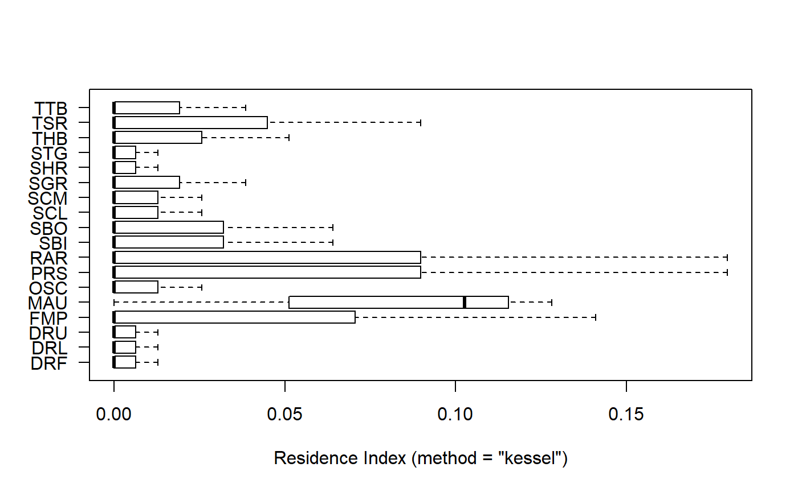
Next we will plot RI values on a map. We’ll start with a plot for each fish on the sample Great Lakes polygon object that is bundled with the glatos package.
Here’s the plot for one fish (below). Note that in the code below we have arbitrarily scaled the point size by “30*RI + 1“. The”+ 1" just ensures that locations with RI = 0 would show up on the plot. We’ve also colored those points differently (pink) to clearly differentiate from the others (red).
#get example great lakes polygon
data(greatLakesPoly)
#plot; note indexing sp for plot.sp
sp::plot(greatLakesPoly, asp = 1,
xlim = range(ri$mean_longitude),
ylim = range(ri$mean_latitude),
col = "white", bg = "grey80")
#sort by decreasing residency_index so that large bubbles don't hide smaller
ri <- ri[order(ri$residency_index, decreasing = TRUE),]
#make column for symbol color
ri$color <- "red"
ri$color[ri$residency_index == 0] <- "pink" #sites with no detects
points(mean_latitude ~ mean_longitude, data = ri[ri$animal_id == "153",],
pch = 21, cex = 1 + 30*residency_index, bg = color)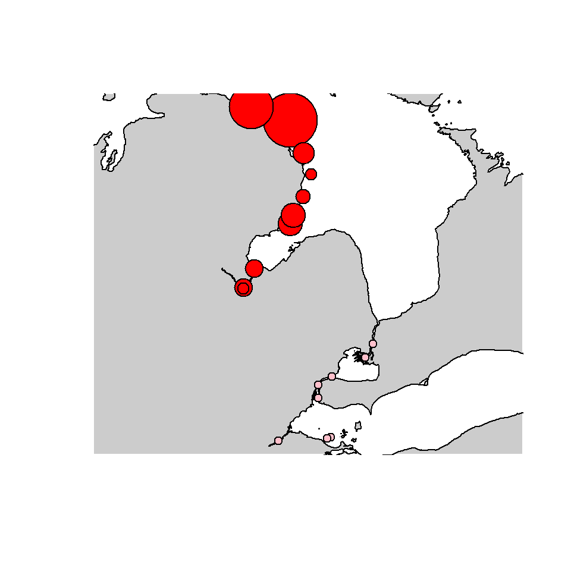
Notice that this fish was detected at all sites in L. Huron and none in L. Erie and detections at the two more northern sites accounted for more time than other sites.
The second fish shows a much different pattern (below), with detections only in the Maumee River and near reefs in the Western Basin.
#plot; note indexing sp for plot.sp
sp::plot(greatLakesPoly, asp = 1,
xlim = range(ri$mean_longitude),
ylim = range(ri$mean_latitude),
col = "white", bg = "grey80")
points(mean_latitude ~ mean_longitude, data = ri[ri$animal_id == "22",],
pch = 21, cex = 1 + 30*residency_index, bg = color)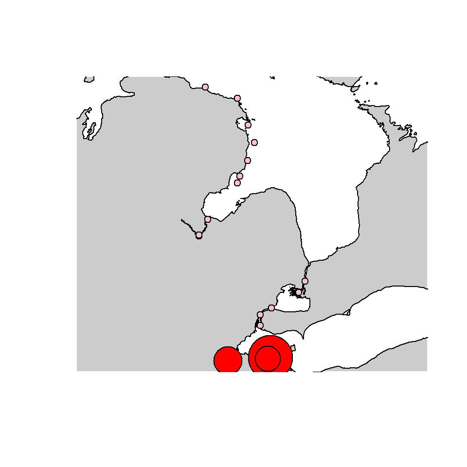
The third fish shares one site in common (Maumee R.) with the second fish, but was otherwise only detected in the Detroit and St. Clair rivers.
#plot; note indexing sp for plot.sp
sp::plot(greatLakesPoly, asp = 1,
xlim = range(ri$mean_longitude),
ylim = range(ri$mean_latitude),
col = "white", bg = "grey80")
points(mean_latitude ~ mean_longitude, data = ri[ri$animal_id == "23",],
pch = 21, cex = 1 + 30*residency_index, bg = color)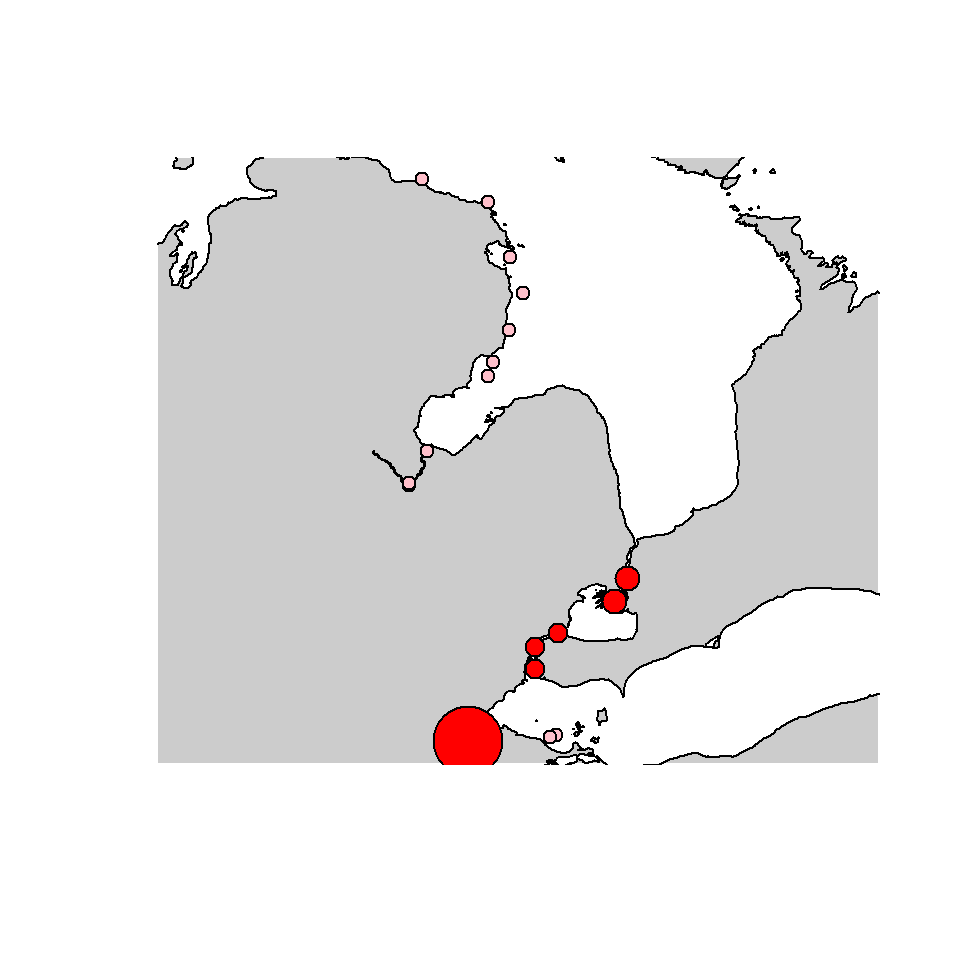
Next, we will calculate and plot the mean RI among the three fish (yes, the sample size is too small; this is just a demo).
We will use functions from the dplyr package and pipes (%>%) from magrittr package because that’s what the kids are into these days.
#calculate mean and sd of RI among fish
rik_summary <- ri %>%
group_by(location, mean_latitude, mean_longitude) %>%
summarise(
ri_mean = mean(residency_index),
ri_sd = sd(residency_index))
head(rik_summary)
# A tibble: 6 x 5
# Groups: location, mean_latitude [6]
location mean_latitude mean_longitude ri_mean ri_sd
<chr> <dbl> <dbl> <dbl> <dbl>
1 DRF 42.2 -83.1 0.00427 0.00740
2 DRL 42.1 -83.1 0.00427 0.00740
3 DRU 42.3 -83.0 0.00427 0.00740
4 FMP 45.5 -83.9 0.0470 0.0814
5 MAU 41.6 -83.6 0.0769 0.0678
6 OSC 44.5 -83.3 0.00855 0.0148 Now we plot the means on a map.
#plot; note indexing sp for plot.sp
sp::plot(greatLakesPoly, asp = 1,
xlim = range(ri$mean_longitude),
ylim = range(ri$mean_latitude),
col = "white", bg = "grey80")
#sort by decreasing residency_index so that large bubbles don't hide smaller
rik_summary <- rik_summary[order(rik_summary$ri_mean, decreasing = TRUE),]
#make column for symbol color
rik_summary$color <- "red"
rik_summary$color[rik_summary$ri_mean == 0] <- "pink" #sites with no detects
points(mean_latitude ~ mean_longitude, data = rik_summary,
pch = 21, cex = 1 + 30*ri_mean, bg = color)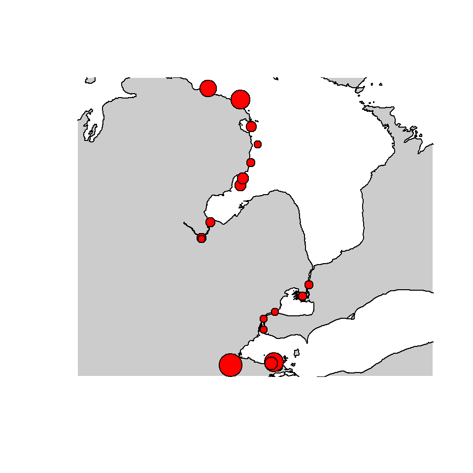
If we had more than three fish in our sample data set, we might infer something about the walleye space use from this information.
Optional location data
Notice in the last plot that all there were no locations without detections. Let’s bring in receiver location data from the rest of the GLATOS network. We will read in the sample receiver file using glatos::read_glatos_receivers() and then change column names to match those required by residence_index().
#get sample receiver data from pkg
loc_file <- system.file("extdata", "sample_receivers.csv",
package = "glatos")
locs <- read_glatos_receivers(loc_file)
locs <- unique(locs[ , c("glatos_array", "deploy_lat", "deploy_long")])
names(locs) <- c("location", "mean_latitude", "mean_longitude")
rik2 <- residence_index(det_events, locations = locs,
calculation_method = 'kessel')Now we calculate mean RI and graph again.
#calculate mean and sd of RI among fish
rik2_summary <- rik2 %>%
group_by(location, mean_latitude, mean_longitude) %>%
summarise(
ri_mean = mean(residency_index),
ri_sd = sd(residency_index))
#sort by decreasing residency_index so that large bubbles don't hide smaller
rik2_summary <- rik2_summary[order(rik2_summary$ri_mean, decreasing = TRUE),]
#plot; note indexing sp for plot.sp
sp::plot(greatLakesPoly, asp = 1,
xlim = range(rik2$mean_longitude),
ylim = range(rik2$mean_latitude),
col = "white", bg = "grey80")
#make column for symbol color
rik2_summary$color <- "red"
rik2_summary$color[rik2_summary$ri_mean == 0] <- "pink" #sites with no detects
points(mean_latitude ~ mean_longitude, data = rik2_summary,
pch = 21, cex = 1 + 30*ri_mean, bg = color)
Groupwise total time
Next, let’s recalculate RI using groupwise_total = TRUE so that RI represents the proportion of each fish’s own time spent at each location.
rik3 <- residence_index(det_events, locations = locs,
calculation_method = 'kessel',
groupwise_total = TRUE )Now we calculate mean RI and graph again.
#calculate mean and sd of RI among fish
rik3_summary <- rik3 %>%
group_by(location, mean_latitude, mean_longitude) %>%
summarise(
ri_mean = mean(residency_index),
ri_sd = sd(residency_index))
#sort by decreasing residency_index so that large bubbles don't hide smaller
rik3_summary <- rik3_summary[order(rik3_summary$ri_mean, decreasing = TRUE),]
#plot; note indexing sp for plot.sp
sp::plot(greatLakesPoly, asp = 1,
xlim = range(rik3$mean_longitude),
ylim = range(rik3$mean_latitude),
col = "white", bg = "grey80")
#make column for symbol color
rik3_summary$color <- "red"
rik3_summary$color[rik3_summary$ri_mean == 0] <- "pink" #sites with no detects
points(mean_latitude ~ mean_longitude, data = rik3_summary,
pch = 21, cex = 1 + 30*ri_mean, bg = color)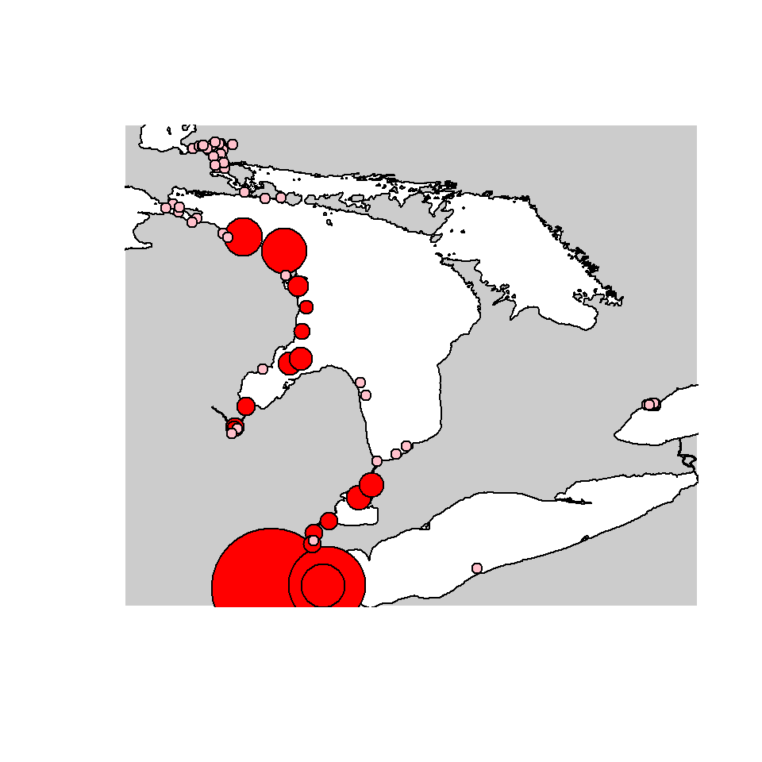
Results here are different than the previous example, with noticably larger mean RI values in Lake Erie and the Maumee River when total time represents individual fish instead of all fish.
Time Interval Method
The “time interval” method (calculation_method = "time_interval") is similar to the “kessel” method, but allows the user to specify size of the time interval. Specifically, this method determines the number of time intervals in which detections occurred at each location and as a fraction of the number of time intervals in which detections occurred among all sites. For each location, residency index (RI) is calculated:
\(RI = \frac{L}{T}\)
\(RI = Residence Index\)
\(L\) = Distinct number of time intervals in which detection observed at this location
\(T\) = Distinct number of time intervals in which detection observed at any location
For consistency with other calculation_methods, the L and T are not reported, but are converted cumulative time covered in days and reported in columns days_detected and total_days.
Note the resulting structure.
head(riti)
animal_id days_detected total_days residency_index location
1 153 0 99 0 AGR
2 153 0 99 0 BBI
3 153 0 99 0 BBW
4 153 0 99 0 BLC
5 153 0 99 0 BLL
6 153 0 99 0 BMR
mean_latitude mean_longitude
1 44.02980 -83.68433
2 45.69734 -84.41925
3 45.77276 -84.61658
4 46.49420 -84.27662
5 46.53541 -84.21317
6 45.53289 -84.12079Now we calculate mean RI and graph again.
#calculate mean and sd of RI among fish
riti_summary <- riti %>%
group_by(location, mean_latitude, mean_longitude) %>%
summarise(
ri_mean = mean(residency_index),
ri_sd = sd(residency_index))
#sort by decreasing residency_index so that large bubbles don't hide smaller
riti_summary <- riti_summary[order(riti_summary$ri_mean, decreasing = TRUE),]
#plot; note indexing sp for plot.sp
sp::plot(greatLakesPoly, asp = 1,
xlim = range(riti$mean_longitude),
ylim = range(riti$mean_latitude),
col = "white", bg = "grey80")
#make column for symbol color
riti_summary$color <- "red"
riti_summary$color[riti_summary$ri_mean == 0] <- "pink" #sites with no detects
points(mean_latitude ~ mean_longitude, data = riti_summary,
pch = 21, cex = 1 + 30*ri_mean, bg = color)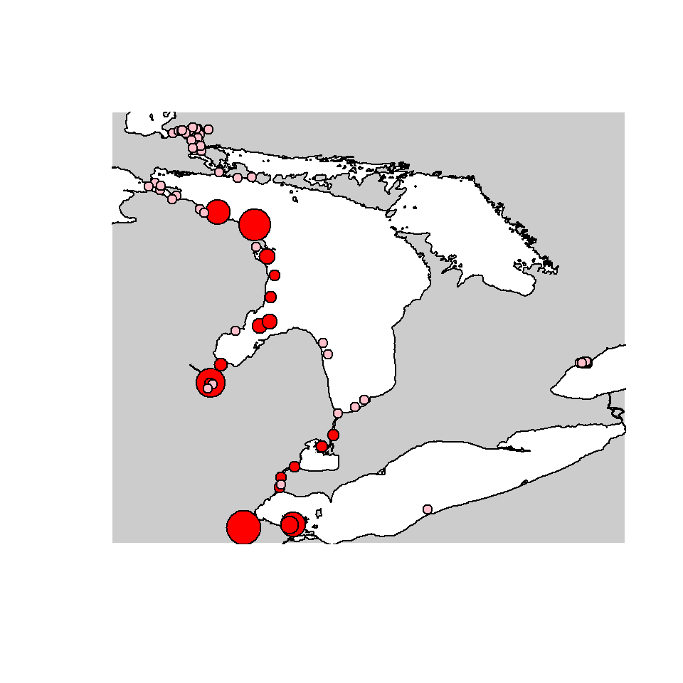
This is very similar to the “kessel” results, as expected.
Changing time interval size
Next, let’s recalculate RI using finer (15 min) and coarser (monthly) time intervals.
15-minute intervals
riti <- glatos::residence_index(det_events, locations = locs,
calculation_method = "time_interval",
time_interval_size = "15 mins")
#calculate mean and sd of RI among fish
riti_summary <- riti %>%
group_by(location, mean_latitude, mean_longitude) %>%
summarise(
ri_mean = mean(residency_index),
ri_sd = sd(residency_index))
#sort by decreasing residency_index so that large bubbles don't hide smaller
riti_summary <- riti_summary[order(riti_summary$ri_mean, decreasing = TRUE),]
#plot; note indexing sp for plot.sp
sp::plot(greatLakesPoly, asp = 1,
xlim = range(riti$mean_longitude),
ylim = range(riti$mean_latitude),
col = "white", bg = "grey80")
#make column for symbol color
riti_summary$color <- "red"
riti_summary$color[riti_summary$ri_mean == 0] <- "pink" #sites with no detects
points(mean_latitude ~ mean_longitude, data = riti_summary,
pch = 21, cex = 1 + 30*ri_mean, bg = color)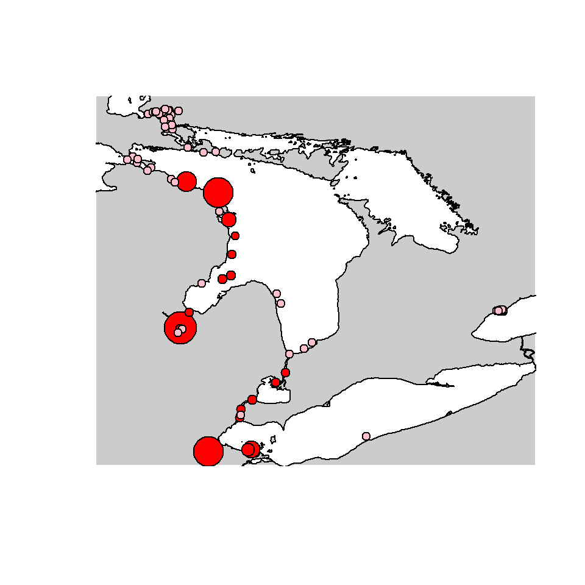
monthly intervals
riti <- glatos::residence_index(det_events, locations = locs,
calculation_method = "time_interval",
time_interval_size = "1 month")
#calculate mean and sd of RI among fish
riti_summary <- riti %>%
group_by(location, mean_latitude, mean_longitude) %>%
summarise(
ri_mean = mean(residency_index),
ri_sd = sd(residency_index))
#sort by decreasing residency_index so that large bubbles don't hide smaller
riti_summary <- riti_summary[order(riti_summary$ri_mean, decreasing = TRUE),]
#plot; note indexing sp for plot.sp
sp::plot(greatLakesPoly, asp = 1,
xlim = range(riti$mean_longitude),
ylim = range(riti$mean_latitude),
col = "white", bg = "grey80")
#make column for symbol color
riti_summary$color <- "red"
riti_summary$color[riti_summary$ri_mean == 0] <- "pink" #sites with no detects
points(mean_latitude ~ mean_longitude, data = riti_summary,
pch = 21, cex = 1 + 30*ri_mean, bg = color)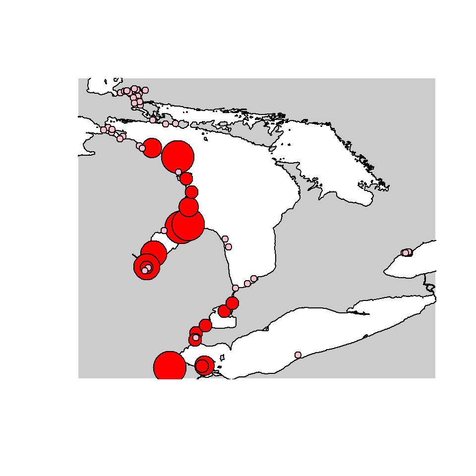
Timedelta Method
The “Timedelta” method (method (calculation_method = "timedelta") calculates the time difference between the first first_detection among all detection events and the last last_detection among all detection events. The timedelta for each location is divided by the timedelta among all locations to determine the residence index.
\(RI = \frac{\Delta S}{\Delta T}\)
\(RI\) = Residence Index
\(\Delta S\) = Last detection time at the location - First detection time at the location
\(\Delta T\) = Last detection time at any location - First detection time at any location
ritd <- glatos::residence_index(det_events, locations = locs,
calculation_method = "timedelta")
#calculate mean and sd of RI among fish
ritd_summary <- ritd %>%
group_by(location, mean_latitude, mean_longitude) %>%
summarise(
ri_mean = mean(residency_index),
ri_sd = sd(residency_index))
#sort by decreasing residency_index so that large bubbles don't hide smaller
ritd_summary <- ritd_summary[order(ritd_summary$ri_mean, decreasing = TRUE),]
#plot; note indexing sp for plot.sp
sp::plot(greatLakesPoly, asp = 1,
xlim = range(ritd$mean_longitude),
ylim = range(ritd$mean_latitude),
col = "white", bg = "grey80")
#make column for symbol color
ritd_summary$color <- "red"
ritd_summary$color[ritd_summary$ri_mean == 0] <- "pink" #sites with no detects
points(mean_latitude ~ mean_longitude, data = ritd_summary,
pch = 21, cex = 1 + 30*ri_mean, bg = color)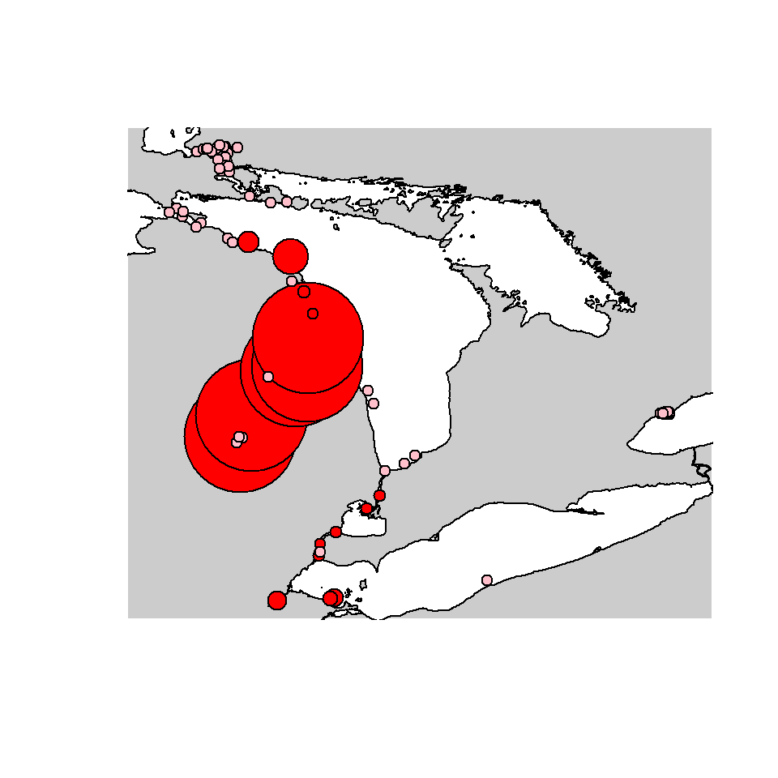
The relatively large points in Saginaw Bay reflect that the total time spanned (not necessarily occupied or detected) at those sites was proportionally larger than others. In other words, fish tended to revisit those sites over long time periods. Keep in mind however, that this could be influenced by other variables, such as the amount of time a fish was at large and alive.
Aggregate With Overlap Method
The “Aggregate With Overlap” method (calculation_method = "aggregate_with_overlap") takes the length of time of each detection event and sums them together. A total is returned. The sum for each location is then divided by the sum among all locations to determine the residence index.
Overlapping events at a given location will only exist in detection event data if multiple animals are represented and therefore is only applicable when group_col = NA.
\(RI = \frac{AwOS}{AwOT}\)
\(RI\) = Residence Index
\(AwOS\) = Sum of length of time of each detection at the location
\(AwOT\) = Sum of length of time of each detection among all locations
Note that we set group_col = NA for this method.
riawo <- glatos::residence_index(det_events, locations = locs,
calculation_method = "aggregate_with_overlap",
group_col = NA)
#calculate mean and sd of RI among fish
riawo_summary <- riawo %>%
group_by(location, mean_latitude, mean_longitude) %>%
summarise(
ri_mean = mean(residency_index),
ri_sd = sd(residency_index))
#sort by decreasing residency_index so that large bubbles don't hide smaller
riawo_summary <- riawo_summary[order(riawo_summary$ri_mean, decreasing = TRUE),]
#plot; note indexing sp for plot.sp
sp::plot(greatLakesPoly, asp = 1,
xlim = range(riawo$mean_longitude),
ylim = range(riawo$mean_latitude),
col = "white", bg = "grey80")
#make column for symbol color
riawo_summary$color <- "red"
riawo_summary$color[riawo_summary$ri_mean == 0] <- "pink" #sites with no detects
points(mean_latitude ~ mean_longitude, data = riawo_summary,
pch = 21, cex = 1 + 30*ri_mean, bg = color)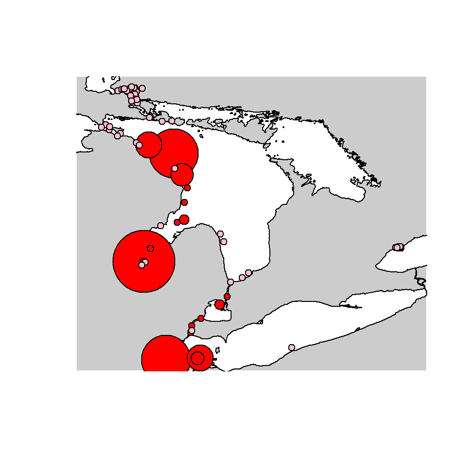
Aggregate No Overlap Method
The “Aggregate No Overlap” method (calculation_method = "aggregate_no_overlap") takes the length of time of each detection event and sums them together. However, any overlap in time between one or more detection events is excluded from the sum. For example, if the first detection event spans from 2016-01-01 01:02:43 to 2016-01-01 01:10:12 and the second detection event spans from 2016-01-01 01:09:01 to 2016-01-01 01:12:43, then the sum of those two events would be 10 minutes. A total is returned once all events have been added without overlap. The sum for each station is then divided by the sum of the array to determine the residence index.
Overlapping events at a given location will only exist in detection event data if multiple animals are represented and therefore is only applicable when group_col = NA.
\(RI = \frac{AnOS}{AnOT}\)
\(RI\) = Residence Index
\(AnOS\) = Sum of length of time of each location, excluding any overlap
\(AnOT\) = Sum of length of time among all locations, excluding any overlap
Note that we set group_col = NA for this method.
riano <- glatos::residence_index(det_events, locations = locs,
calculation_method = "aggregate_with_overlap",
group_col = NA)
#calculate mean and sd of RI among fish
riano_summary <- riano %>%
group_by(location, mean_latitude, mean_longitude) %>%
summarise(
ri_mean = mean(residency_index),
ri_sd = sd(residency_index))
#sort by decreasing residency_index so that large bubbles don't hide smaller
riano_summary <- riano_summary[order(riano_summary$ri_mean, decreasing = TRUE),]
#plot; note indexing sp for plot.sp
sp::plot(greatLakesPoly, asp = 1,
xlim = range(riano$mean_longitude),
ylim = range(riano$mean_latitude),
col = "white", bg = "grey80")
#make column for symbol color
riano_summary$color <- "red"
riano_summary$color[riano_summary$ri_mean == 0] <- "pink" #sites with no detects
points(mean_latitude ~ mean_longitude, data = riano_summary,
pch = 21, cex = 1 + 30*ri_mean, bg = color)
In this particular data set, there are no overlapping detection events (among fish). Otherwise, these points would appear smaller than the previous example.
Plotting with Plotly
Below is the code for plotting the RI using plotly. plotly allows us to interact with the map rather than haveing a static image. More about plotly can be found here. To export figures as image files from plotly you will also need the external command line program orca. To install orca, see https://github.com/plotly/orca#installation.
Attach the plotly library.
Set up the map.
geo <- list(
scope = 'north america',
showland = TRUE,
landcolor = toRGB("white"),
showocean = TRUE,
oceancolor = toRGB("gray"),
showcountries = TRUE,
showlakes = TRUE,
lakecolor = plotly::toRGB("gray"),
resolution = 50,
center = list(lat = median(ri$mean_latitude),
lon = median(ri$mean_longitude)),
lonaxis = list(range=c(min(ri$mean_longitude)-1, max(ri$mean_longitude)+1)),
lataxis = list(range=c(min(ri$mean_latitude)-1, max(ri$mean_latitude)+1))
)
map <- ri %>%
plot_geo(lat = ~mean_latitude, lon = ~mean_longitude, color = ~residency_index )%>%
add_markers(
text = ~paste(location, ': ', residency_index),
hoverinfo = "text",
size = ~c(residency_index * 5)
)%>%
layout(title = "Kessel RI",geo = geo)To show the map you can just type out the variable name.
Exporting the map as an image file requires the external program orca, which is called by plotly::orca().
Kessel, S.T., Hussey, N.E., Crawford, R.E., Yurkowski, D.J., O’Neill, C.V. and Fisk, A.T., 2016. Distinct patterns of Arctic cod (Boreogadus saida) presence and absence in a shallow high Arctic embayment, revealed across open-water and ice-covered periods through acoustic telemetry. Polar Biology, 39(6), pp.1057-1068. https://www.researchgate.net/publication/279269147↩
Kessel, S.T., Hussey, N.E., Crawford, R.E., Yurkowski, D.J., O’Neill, C.V. and Fisk, A.T., 2016. Distinct patterns of Arctic cod (Boreogadus saida) presence and absence in a shallow high Arctic embayment, revealed across open-water and ice-covered periods through acoustic telemetry. Polar Biology, 39(6), pp.1057-1068. https://www.researchgate.net/publication/279269147↩